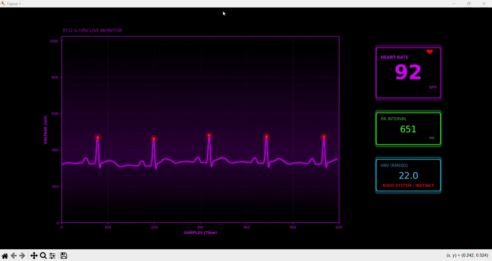

DIY ECG & PPG Monitoring System
Instead of trusting noisy datasets downloaded from strangers on the internet, I built my own physical test rig to capture real electrical heart signals and optical finger pulses. This gave me complete control over what my body was doing while testing.
The Problem: Noisy Datasets and Missing Context
Public research datasets are often messy: people describe their emotions inconsistently, and you have no idea if someone sneezed, shifted in their chair, or got distracted during the recording. To truly understand how heart signals respond to mental focus, I needed to build my own hardware where I knew 100% what the person was doing.
This meant stepping outside of pure software and building a physical device: connecting heart sensor boards, filtering out electrical noise, and writing fast code that detects heartbeats on a microcontroller in real time.
What was I trying to achieve?
Can affordable electronic chips (an ESP32 and low-cost sensor modules) capture clean heart signals with millisecond accuracy, so we can calculate reliable heart rate variability live on screen?
Circuit Components & What They Do
| Part | Component | What It Does |
|---|---|---|
| Heart Sensor Chip | AD8232 Amplifier | Amplifies the tiny electrical signals from the heart and filters out background static. |
| Electrical Filters | Resistor-Capacitor Filter | Blocks 50Hz electrical hum from wall outlets while letting clean heartbeats pass through. |
| High-Precision Converter | ADS1115 (16-bit ADC) | Converts delicate analog heart signals into crisp 16-bit digital numbers 860 times a second. |
| Microcontroller | ESP32 Dual-Core | The device's brain: one core reads the sensors, the other core calculates heartbeats in real time. |
| Electrodes | Medical Sticky Gel Pads | Placed on the chest to catch clean electrical pulses straight from the heart. |
Step-by-Step Signal Processing
Live Signal Telemetry Verification
The prototype successfully achieved continuous real-time ECG telemetry. In benchmark testing during calm cognitive focus, the system demonstrated reliable R-peak tracking: 95 BPM instantaneous heart rate, 634 ms RR interval, and 25.7 ms RMSSD HRV ("Orienting / Deciding" state).




Hardware Traps I Had to Solve
Building physical circuits revealed tricky problems you never see when analyzing clean CSV files:
What I Learned: Clean Hardware Beats Fancy AI
Your algorithm is only as good as your raw sensor data. If your physical circuit is clean, detecting heartbeats is simple and over 98% accurate. But if your sensor is noisy, even the most complex AI neural networks will get confused and hallucinate false beats.
How This Led to Phase 03
Technical Verification Specs
| Metric | Value | Validation Method |
|---|---|---|
| R-Peak Timing Jitter | < 2.4 ms | Benchmarked against synthetic ECG generator |
| ADC Effective Resolution | 15.2 Bits | ADS1115 oversampled differential mode |
| GUI Refresh Rate | 30 FPS | PyQtGraph hardware-accelerated OpenGL viewport |
| Serial Baud Rate | 115,200 bps | Binary float protocol over USB-UART |